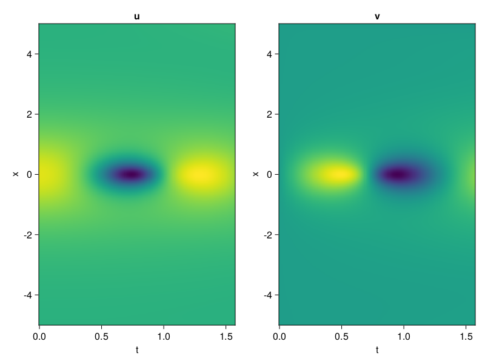
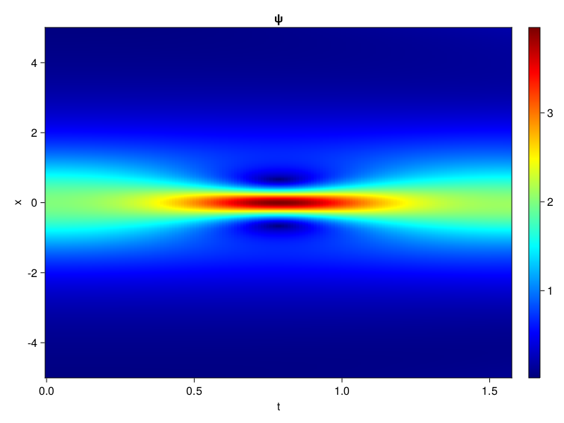
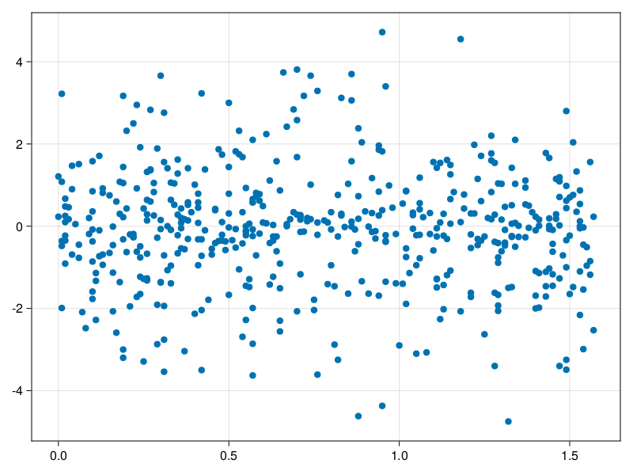

Schrödinger equation
The nonlinear Shrödinger equation is given by
\[\mathrm{i} \partial_t \psi=-\frac{1}{2} \sigma \partial_{x x} \psi-\beta|\psi|^2 \psi\]
Let $\sigma=\beta=1, \psi=u+v i$, the equation can be transformed into a system of partial differential equations
using ModelingToolkit, IntervalSets, Sophon, CairoMakie
using Optimization, OptimizationOptimJL
@parameters x,t
@variables u(..), v(..)
Dₜ = Differential(t)
Dₓ² = Differential(x)^2
eqs=[Dₜ(u(x,t)) ~ -Dₓ²(v(x,t))/2 - (abs2(v(x,t)) + abs2(u(x,t))) * v(x,t),
Dₜ(v(x,t)) ~ Dₓ²(u(x,t))/2 + (abs2(v(x,t)) + abs2(u(x,t))) * u(x,t)]
bcs = [u(x, 0.0) ~ 2sech(x),
v(x, 0.0) ~ 0.0,
u(-5.0, t) ~ u(5.0, t),
v(-5.0, t) ~ v(5.0, t)]
domains = [x ∈ Interval(-5.0, 5.0),
t ∈ Interval(0.0, π/2)]
@named pde_system = PDESystem(eqs, bcs, domains, [x,t], [u(x,t),v(x,t)])\[ \begin{align} \frac{\mathrm{d}}{\mathrm{d}t} u\left( x, t \right) =& - \frac{1}{2} \frac{\mathrm{d}^{2}}{\mathrm{d}x^{2}} v\left( x, t \right) - \left( \left|u\left( x, t \right)\right|^{2} + \left|v\left( x, t \right)\right|^{2} \right) v\left( x, t \right) \\ \frac{\mathrm{d}}{\mathrm{d}t} v\left( x, t \right) =& \frac{1}{2} \frac{\mathrm{d}^{2}}{\mathrm{d}x^{2}} u\left( x, t \right) + \left( \left|u\left( x, t \right)\right|^{2} + \left|v\left( x, t \right)\right|^{2} \right) u\left( x, t \right) \end{align} \]
pinn = PINN(u = Siren(2,1; hidden_dims=16,num_layers=4, omega = 1.0),
v = Siren(2,1; hidden_dims=16,num_layers=4, omega = 1.0))
sampler = QuasiRandomSampler(500, (200,200,20,20))
strategy = NonAdaptiveTraining(1,(10,10,1,1))
prob = Sophon.discretize(pde_system, pinn, sampler, strategy)OptimizationProblem. In-place: true
u0: ComponentVector{Float64}(u = (layer_1 = (weight = [0.3874785900115967 -0.22813701629638672; 0.026815354824066162 0.34727638959884644; … ; 0.06398361921310425 0.1603313684463501; 0.05657088756561279 -0.01467442512512207], bias = [0.0; 0.0; … ; 0.0; 0.0;;]), layer_2 = (weight = [-0.20166316628456116 0.5177546739578247 … -0.2711952328681946 -0.32852551341056824; -0.1643383800983429 -0.19979450106620789 … -0.23568934202194214 -0.15478627383708954; … ; 0.11212026327848434 0.4704488217830658 … 0.28568094968795776 0.3138364255428314; -0.5328332781791687 -0.10734326392412186 … -0.4773971438407898 -0.008522586897015572], bias = [0.0; 0.0; … ; 0.0; 0.0;;]), layer_3 = (weight = [0.4959300756454468 0.297588050365448 … -0.4817725718021393 -0.19790765643119812; -0.44303369522094727 0.3963349163532257 … -0.009576932527124882 0.37115201354026794; … ; -0.5015933513641357 -0.3705396354198456 … -0.2994576692581177 0.5896050930023193; 0.2892521917819977 -0.2459268569946289 … -0.14932364225387573 -0.20688094198703766], bias = [0.0; 0.0; … ; 0.0; 0.0;;]), layer_4 = (weight = [-0.50148606300354 0.5645966529846191 … 0.15619781613349915 -0.5777998566627502; 0.305996835231781 -0.2685311734676361 … 0.4666054844856262 0.27897965908050537; … ; -0.3048243820667267 -0.5175238847732544 … 0.4061840772628784 -0.19166253507137299; -0.013544289395213127 -0.4223078489303589 … 0.13149897754192352 -0.1516980677843094], bias = [0.0; 0.0; … ; 0.0; 0.0;;]), layer_5 = (weight = [-0.2715543210506439 -0.3843908905982971 … -0.07773594558238983 -0.5073510408401489], bias = [0.0;;])), v = (layer_1 = (weight = [0.20150697231292725 0.06821119785308838; -0.08421927690505981 0.1957465410232544; … ; -0.2910805940628052 0.0892409086227417; 0.07430779933929443 0.3840155601501465], bias = [0.0; 0.0; … ; 0.0; 0.0;;]), layer_2 = (weight = [-0.08821699023246765 -0.473184198141098 … 0.059172216802835464 -0.5597826838493347; 0.10764008015394211 -0.469845175743103 … -0.06427145004272461 -0.13374964892864227; … ; 0.17516815662384033 -0.3976263105869293 … 0.3729603886604309 0.06650401651859283; 0.0635983794927597 -0.4460837244987488 … -0.48718956112861633 0.22165937721729279], bias = [0.0; 0.0; … ; 0.0; 0.0;;]), layer_3 = (weight = [0.47528502345085144 -0.5229600071907043 … -0.3462598919868469 -0.03645183891057968; 0.32054948806762695 0.5645394325256348 … 0.5803477168083191 0.3835729956626892; … ; 0.6023976802825928 -0.5446060299873352 … -0.5579232573509216 -0.28893157839775085; -0.43320003151893616 -0.4377721846103668 … 0.5430877804756165 0.5670853853225708], bias = [0.0; 0.0; … ; 0.0; 0.0;;]), layer_4 = (weight = [-0.301477313041687 -0.16859570145606995 … -0.277545690536499 0.37923136353492737; 0.007957343943417072 -0.3175954520702362 … -0.038683827966451645 -0.399113267660141; … ; 0.43233323097229004 -0.5313770771026611 … 0.6022834181785583 0.22113101184368134; -0.01261572353541851 0.2753700613975525 … 0.23489408195018768 0.4952442944049835], bias = [0.0; 0.0; … ; 0.0; 0.0;;]), layer_5 = (weight = [-0.4233274459838867 -0.09828594326972961 … -0.5038638114929199 -0.07557447254657745], bias = [0.0;;])))Now we train the neural nets and resample data while training.
function train(pde_system, prob, sampler, strategy, resample_period = 500, n=10)
bfgs = BFGS()
res = Optimization.solve(prob, bfgs; maxiters=2000)
for i in 1:n
data = Sophon.sample(pde_system, sampler)
prob = remake(prob; u0=res.u, p=data)
res = Optimization.solve(prob, bfgs; maxiters=resample_period)
end
return res
end
res = train(pde_system, prob, sampler, strategy)u: ComponentVector{Float64}(u = (layer_1 = (weight = [0.661820023256608 -0.01728148058319503; 0.13152414173411153 0.18898548275897817; … ; -0.43567113372856286 0.27207709735263147; -0.16572288038587918 0.26897659785217665], bias = [0.10475374449234033; -0.2350013644896072; … ; -0.14568782680402106; -0.11559698158202233;;]), layer_2 = (weight = [-0.24189180308709576 0.6382505446755538 … -0.12175055055881509 -0.38996483290328454; -0.3480546273189254 -0.2259809506357841 … -0.45498431227960223 -0.04527958964368808; … ; 0.19742558343404754 0.29935399617942765 … 0.5276805889272668 0.5498006194165825; -0.457016993584449 -0.3966503654202491 … -0.4953281109591445 -0.20079580198984415], bias = [-0.3195142934845018; -0.10727342263134379; … ; -0.04837419788904637; 0.07307513026864591;;]), layer_3 = (weight = [0.6060950366838717 0.3577964044910602 … -0.6438174919659917 0.19496597200889934; -0.374518710552947 0.5004274226674604 … 0.365677058008259 0.1803786286678709; … ; -0.45315370429147267 -0.357362416918306 … -0.5339091417676401 0.6152581940960585; 0.11787511309409257 -0.7082680709450564 … -0.20636876938743 -0.03239852738856451], bias = [0.41304519223216; -0.359757358528426; … ; -0.18090886647397927; 0.18336816433615935;;]), layer_4 = (weight = [-0.25017973179844 0.21343979247603012 … 0.43999974528938246 -0.37366813766953955; 0.1570146886440354 -0.02175765826465928 … 0.6112390899081285 0.31002732653031434; … ; -0.1991768047991105 -0.9460676156391771 … 0.41392364013839694 -0.15815301524766662; 0.1984209797388835 -0.8273796613525625 … -0.12889275005370743 0.2101254867431774], bias = [0.3812210619301213; -0.132106439524652; … ; 0.22113374885706863; 0.5312853370477174;;]), layer_5 = (weight = [-0.5108964602855035 -0.9844817676326049 … -0.3026672430528846 -0.49094178333236455], bias = [0.21482772190882435;;])), v = (layer_1 = (weight = [0.07347480016315558 0.04516148463203791; -0.21427900646804893 0.4015427621649887; … ; -0.48390381028877966 0.21801253924792482; 0.3514850061086814 0.435444373781637], bias = [0.43034795701643513; -0.345859354986729; … ; -0.05473317134091551; 0.3293776084060318;;]), layer_2 = (weight = [-0.4202999612525721 -0.3618593725767857 … 0.16415382809963894 -0.6275537692060259; 0.3326597824202108 -0.4939266146270037 … -0.2463581199675342 -0.11207344458582906; … ; -0.09387966447230202 -0.2801410606695813 … 0.2828503902889124 -0.04394493424451871; 0.18112655291060267 -0.28503197941426345 … -0.37633870164260325 0.20310932049374522], bias = [-0.11965668764233624; 0.20405708620444557; … ; 0.022835046701180254; -0.0231153460006013;;]), layer_3 = (weight = [0.28506373851721484 -0.10363836279542846 … -0.4195770709164727 0.2974634887847538; 0.4821076292772476 0.34568364926523376 … 0.5860871703256443 0.05929087130539823; … ; 0.8591632399420613 -0.540653645869166 … -0.4635213660064034 -0.4643195495215921; -0.5211434147095294 -0.19744633423903882 … 0.2835858378053243 0.35629328129070814], bias = [0.11361611879723006; -0.6695259686408815; … ; -0.05265244183247683; -0.006140001611268216;;]), layer_4 = (weight = [-0.2910201930437295 0.4050270970786797 … 0.2630365624945456 0.19975359039091586; -0.04438551374245454 -0.37558131047857585 … -0.19333747678568056 -0.35642968786772133; … ; 0.3022391954161308 -0.7198746199712232 … 0.8379579031944079 0.4011188333697662; 0.012621451825595698 0.21577192692527997 … 0.2121116760759714 0.48606920287088745], bias = [0.20649137104703394; 0.06499074861499529; … ; -0.03256706905388224; 0.1258390512936596;;]), layer_5 = (weight = [-0.393177618335788 -0.46142906727888827 … -1.5800599165784401 -0.04878141515071748], bias = [0.043616309212515254;;])))phi = pinn.phi
ps = res.u
xs, ts= [infimum(d.domain):0.01:supremum(d.domain) for d in pde_system.domain]
u = [sum(phi.u(([x,t]), ps.u)) for x in xs, t in ts]
v = [sum(phi.v(([x,t]), ps.v)) for x in xs, t in ts]
ψ = @. sqrt(u^2+ v^2)
axis = (xlabel="t", ylabel="x", title="u")
fig, ax1, hm1 = heatmap(ts, xs, u', axis=axis)
ax2, hm2= heatmap(fig[1, end+1], ts, xs, v', axis= merge(axis, (; title="v")))
display(fig)
axis = (xlabel="t", ylabel="x", title="ψ")
fig, ax1, hm1 = heatmap(ts, xs, ψ', axis=axis, colormap=:jet)
Colorbar(fig[:, end+1], hm1)
display(fig)
Customize Sampling
Bascially any sampling method is supportted. For example we can sample data according to the predicted solution.
using StatsBase
data = vec([[x, t] for x in xs, t in ts])
wv = vec(ψ)
new_data = wsample(data, wv, 500)
new_data = reduce(hcat, new_data)
fig, ax = scatter(new_data[2,:], new_data[1,:])
prob.p[1] = new_data
prob.p[2] = new_data
prob = remake(prob; u0 = res.u)
# res = Optimization.solve(prob, bfgs; maxiters=1000)OptimizationProblem. In-place: true
u0: ComponentVector{Float64}(u = (layer_1 = (weight = [0.661820023256608 -0.01728148058319503; 0.13152414173411153 0.18898548275897817; … ; -0.43567113372856286 0.27207709735263147; -0.16572288038587918 0.26897659785217665], bias = [0.10475374449234033; -0.2350013644896072; … ; -0.14568782680402106; -0.11559698158202233;;]), layer_2 = (weight = [-0.24189180308709576 0.6382505446755538 … -0.12175055055881509 -0.38996483290328454; -0.3480546273189254 -0.2259809506357841 … -0.45498431227960223 -0.04527958964368808; … ; 0.19742558343404754 0.29935399617942765 … 0.5276805889272668 0.5498006194165825; -0.457016993584449 -0.3966503654202491 … -0.4953281109591445 -0.20079580198984415], bias = [-0.3195142934845018; -0.10727342263134379; … ; -0.04837419788904637; 0.07307513026864591;;]), layer_3 = (weight = [0.6060950366838717 0.3577964044910602 … -0.6438174919659917 0.19496597200889934; -0.374518710552947 0.5004274226674604 … 0.365677058008259 0.1803786286678709; … ; -0.45315370429147267 -0.357362416918306 … -0.5339091417676401 0.6152581940960585; 0.11787511309409257 -0.7082680709450564 … -0.20636876938743 -0.03239852738856451], bias = [0.41304519223216; -0.359757358528426; … ; -0.18090886647397927; 0.18336816433615935;;]), layer_4 = (weight = [-0.25017973179844 0.21343979247603012 … 0.43999974528938246 -0.37366813766953955; 0.1570146886440354 -0.02175765826465928 … 0.6112390899081285 0.31002732653031434; … ; -0.1991768047991105 -0.9460676156391771 … 0.41392364013839694 -0.15815301524766662; 0.1984209797388835 -0.8273796613525625 … -0.12889275005370743 0.2101254867431774], bias = [0.3812210619301213; -0.132106439524652; … ; 0.22113374885706863; 0.5312853370477174;;]), layer_5 = (weight = [-0.5108964602855035 -0.9844817676326049 … -0.3026672430528846 -0.49094178333236455], bias = [0.21482772190882435;;])), v = (layer_1 = (weight = [0.07347480016315558 0.04516148463203791; -0.21427900646804893 0.4015427621649887; … ; -0.48390381028877966 0.21801253924792482; 0.3514850061086814 0.435444373781637], bias = [0.43034795701643513; -0.345859354986729; … ; -0.05473317134091551; 0.3293776084060318;;]), layer_2 = (weight = [-0.4202999612525721 -0.3618593725767857 … 0.16415382809963894 -0.6275537692060259; 0.3326597824202108 -0.4939266146270037 … -0.2463581199675342 -0.11207344458582906; … ; -0.09387966447230202 -0.2801410606695813 … 0.2828503902889124 -0.04394493424451871; 0.18112655291060267 -0.28503197941426345 … -0.37633870164260325 0.20310932049374522], bias = [-0.11965668764233624; 0.20405708620444557; … ; 0.022835046701180254; -0.0231153460006013;;]), layer_3 = (weight = [0.28506373851721484 -0.10363836279542846 … -0.4195770709164727 0.2974634887847538; 0.4821076292772476 0.34568364926523376 … 0.5860871703256443 0.05929087130539823; … ; 0.8591632399420613 -0.540653645869166 … -0.4635213660064034 -0.4643195495215921; -0.5211434147095294 -0.19744633423903882 … 0.2835858378053243 0.35629328129070814], bias = [0.11361611879723006; -0.6695259686408815; … ; -0.05265244183247683; -0.006140001611268216;;]), layer_4 = (weight = [-0.2910201930437295 0.4050270970786797 … 0.2630365624945456 0.19975359039091586; -0.04438551374245454 -0.37558131047857585 … -0.19333747678568056 -0.35642968786772133; … ; 0.3022391954161308 -0.7198746199712232 … 0.8379579031944079 0.4011188333697662; 0.012621451825595698 0.21577192692527997 … 0.2121116760759714 0.48606920287088745], bias = [0.20649137104703394; 0.06499074861499529; … ; -0.03256706905388224; 0.1258390512936596;;]), layer_5 = (weight = [-0.393177618335788 -0.46142906727888827 … -1.5800599165784401 -0.04878141515071748], bias = [0.043616309212515254;;])))